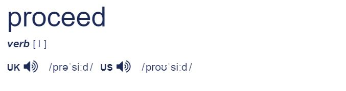

נניח וחיפשתם מילה במילון האינטרנטי של קיימברידג', לצורך העניין את המילה proceed.
זהו מה שנראה במבט ראשוני:

מתחת למילה אנחנו רואים שחלק הדיבור של המילה הזו הוא פועל. אם תחפשו בעצמכם תראו בחלק נוסף למטה פירושים שונים, שנחתכו מהתמונה כדי להתמקד בנושא הפוסט בלבד.
מה לגבי החלק התחתון? מלבד US ו-UK שמסמנים הגיה אמריקאית ובריטית, חלק מהאותיות שם עם סימונים שלא נתקלנו בהם ומשמעות לא מובנת. לא אחרי שתקראו את הפוסט הזה.
אלו הם בסך הכל סימונים מתוך ה-IPA, סט מוסכם ובינלאומי של אלפבית וסימונים ('עיטורים') פונטיים.
פונטיים הכוונה שקשורים לתחום הפונטיקה – הגייה, הדרך בה מבטאים שפה.
ישנו יתרון בהכרות עם IPA
תוכלו לראות בחלק המודגש בתמונה שישנו סמל של רמקול. בהרבה מילונים אינטרנטיים ניתן פשוט להשמיע הקלטה של המילה. לכן תוכל לעלות השאלה האם יש טעם ללמוד את האלפבית הפונטי.
השמעת המילים היא אופציה נוחה לחלוטין, אבל לעיתים לא מספיקה. כדי להבין למה, נצטרך לערוך היכרות עם המושג הבא.
פונמה – Phoneme
נוכל לחשוב על פונמה כיחידת צליל בסיסית.
באופן כללי, בכל השפות בעולם ביחד, יש כ-2000 פונמות (רבים של פונמה).
בשפה האנגלית יש רק 44 פונמות.
לתינוקות יש את היכולת הפוטנציאלית להשתמש בכל אחד מ-2000 הפונמות, אבל לאחר תקופת זמן מסוימת היכולת שנשארת היא של אותן הצלילים בשפה או שפות שהפעוט נחשף אליהן.
יורדים ברזולוציה – מטרת ה-IPA
אז למה הסברנו על phonemes? מהסיבה ששמיעה של מילה מוקראת אינה בהכרח מספקת אותנו במידע של אילו צלילים שמענו. גם במילים שמוקראות לאט, לפעמים נגלה שלא קל לחזור אחרי צלילים מסוימים.
זאת בגלל שיש פונמות באנגלית שאין בעברית. לכן השימוש הזה זר לנו, ודורש תרגול מתמשך כדי לזהות אותו ובטח כדי להפיק את הצליל הזה בעצמנו.
המגוון הרחב של פונמות, והרצון להבין כיצד נשמעות מילים בכל שפה, הצריכו הסדרה של סט מסוים של צלילים עם סימונים קבועים. משזה נקבע והוסדר, אנשים ממקומות שונים בעולם, עם שפות אם שונות, יכולים לחקור וללמוד שפות בצורה נוחה יותר.
כשנותנים לדברים שם, ניתן להתייחס אליהם וכך להתקדם במחקר ובהבנה שלהם. כך גם קרה עם המתמטיקה למשל. מהמאה ה-15 והלאה, התווספו יותר ויותר סימונים מקובלים. ואכן, באותה התקופה חקר נושאים שונים קיבל תאוצה.
אין דבר רע במבטא
נדגיש, אין הכוונה בלמידה של IPA להיות סוג של אמצעי בדרך לניסיון לאמץ מבטא אמריקאי.
קשה מאוד לאמץ לידי שימוש צלילים שלא נחשפנו אליהם בגיל מאוד מוקדם, ויש נושאים שהרבה יותר כדאי לתת עליהם את הדעת – כמו תוכן ובהירות המשפטים, ביחד עם הזרימה שלהם מאחד לשני.
יחד עם זאת, עבודה על המבטא כן חשובה ברמה הבסיסית, שכן היא מאפשרת לאחרים להבין אותנו בקלות.
איך ללמוד בפועל את האלפבית
בקרו ברשימה הזו, שם תוכלו למצוא את 44 הפונמות של השפה האנגלית, ובלחיצה לשמוע אותן במילים.
נסו לחזור אחרי הדובר. שימו לב שאתם לוחצים על AM שפירושו מבטא אמריקאי (American) ולא BR (British).
כעת ננסה להבין את הדוגמה של proceed למעלה: proʊˈsiːd.
תחילה יש לנו p, שלאחריה r ואז o – שלושת האותיות האלו מופיעות ברשימה שקיבלתם קישור אליה. שמעו אותן בנפרד.
לאחר מכן, ישנה האות מהאלפבית הפונטי שנקראית באנגלית horseshoe, חפשו אותה בטבלה והאזינו לה גם.
כעת מופיע גרש ' שמסמן שההברה אחריו תהיה בהדגשה. ההברה שאחרי הנקודותיים היא si:d. מה יש כאן בעצם? נחפש בטבלה, נראה את s, נראה את האות i שלאחריה נקודותיים :i ואת האות d. נאזין לכל אחת בנפרד.
לבסוף, ננסה להרכיב בעצמנו את המילה משלל הסימונים. נאזין במילון ונקבל תחושה לגבי מידת הדיוק שלנו. שימו לב, האם שמתם דגש במקום הנכון? האם העיצורים והתנועות נשמעים זהה להקלטה?
הערה – קישור למילון של קיימברידג' ביחד עם עוד מקורות לימוד רבים תוכלו למצוא בתפריט בסימניה 'מקורות לימוד'.